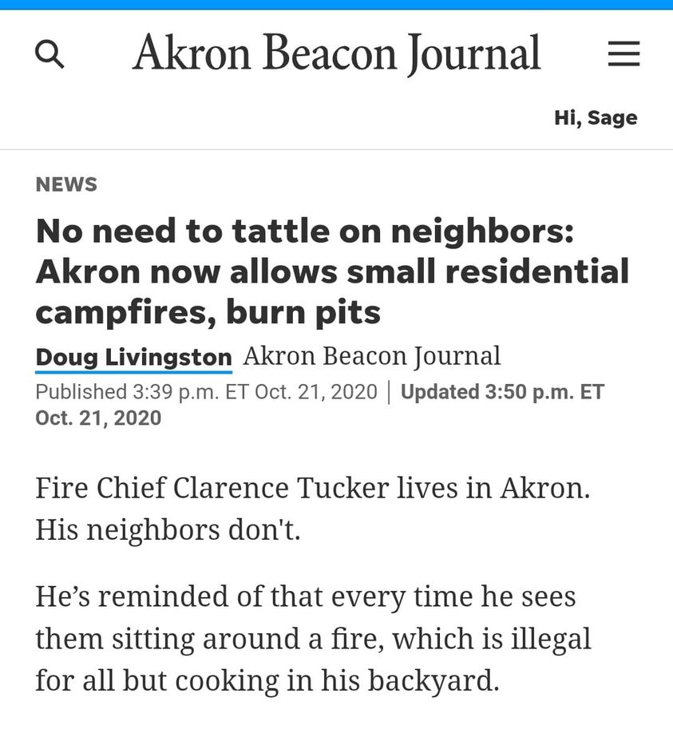

Mobile uploads
So, the homeless people I shelter have been told in no uncertain terms they can't have a fire to stay warm. But I guess the new law that makes fires legal only applies to non-homeless Akronites.
Care to explain that @[100064805494040:2048:City of Akron, Ohio - Mayor's Office] and @[486849101501262:274:Akron Fire Department] ?